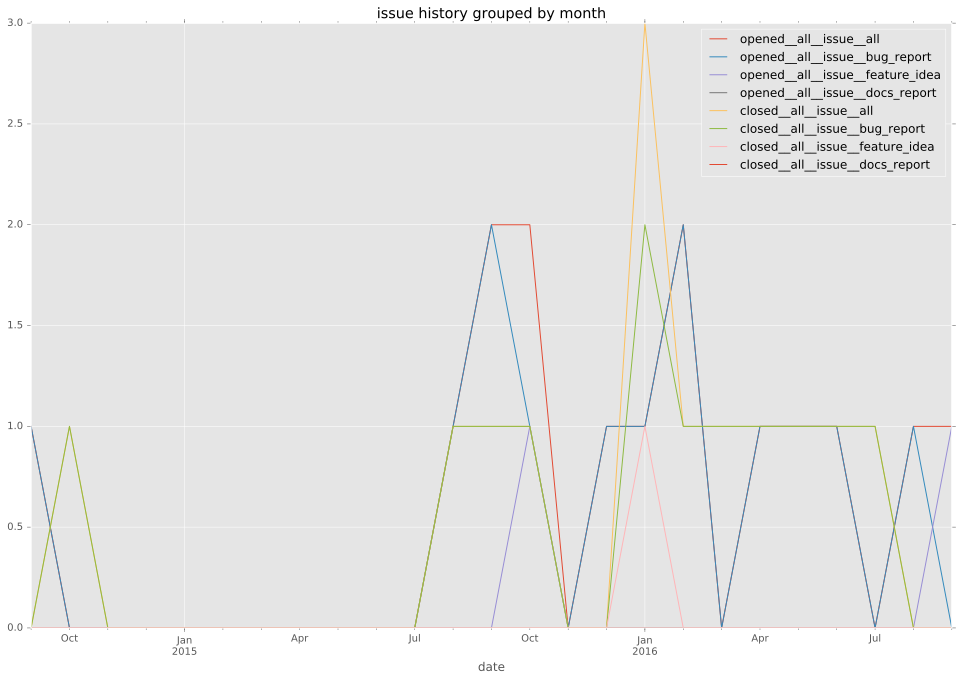
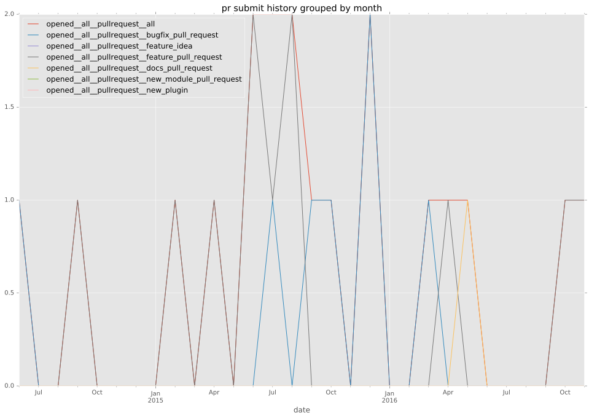
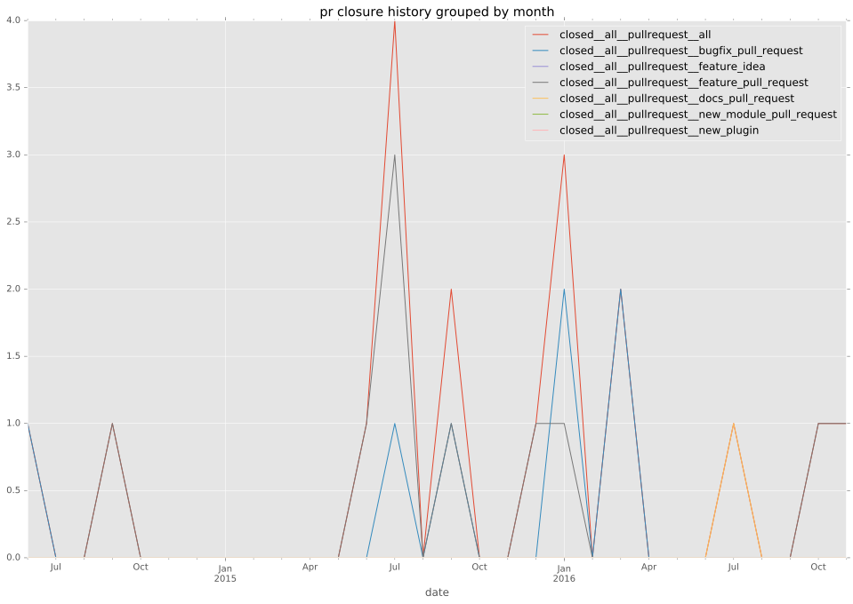

authors
maintainers
- jhawkesworth
contributors
- jhawkesworth : 11 commits
- angstwad : 8 commits
- cchurch : 7 commits
- nitzmahone : 3 commits
- abadger : 2 commits
- sivel : 1 commits
- mpdehaan : 1 commits
- abriening : 1 commits
total issue counts
feature pull request: 9
pullrequest: 17
docs pull request: 1
bugfix pull request: 7
feature idea: 2
issue: 14
bug report: 12
issue history

pullrequest history


days open by issue type
bugfix pull request
count: 10
std: 38.6679597485
min: 0
max: 105
median: 3.0
mean: 23.9
all
count: 37
std: 50.4746390694
min: 0
max: 175
median: 4.0
mean: 38.2432432432
pullrequest
count: 0
std: nan
min: nan
max: nan
median: nan
mean: nan
docs pull request
count: 2
std: 0.0
min: 42
max: 42
median: 42.0
mean: 42.0
feature pull request
count: 13
std: 56.9605126381
min: 0
max: 165
median: 32.0
mean: 55.0
feature idea
count: 1
std: nan
min: 79
max: 79
median: 79.0
mean: 79.0
issue
count: 0
std: nan
min: nan
max: nan
median: nan
mean: nan
bug report
count: 11
std: 55.2819220821
min: 0
max: 175
median: 1.0
mean: 27.0909090909
closures grouped by total days open